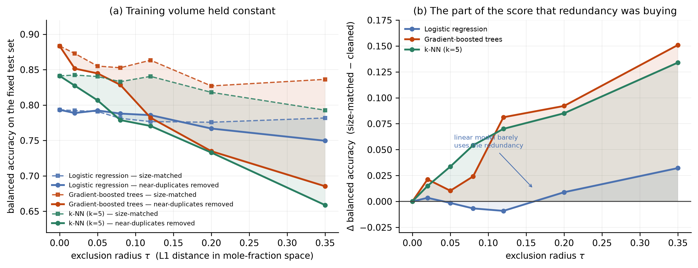

We audited a common evaluation habit in ML-for-materials work. Under an honest, near-duplicate-aware split, gradient-boosted trees lose accuracy — and ~76% of that loss is redundancy, not data volume. Every number regenerates from raw data with one command.
High-entropy-alloy datasets are dense with compositionally near-identical recipes
(several AlCoCrFeNi-family alloys differing only by small mole-fraction tweaks).
After a random train/test split, "hard" test alloys have near-twins in training.
A model that merely memorises those twins looks skilful. This is
near-duplicate leakage — and it is invisible under a random split.
For radius τ in mole-fraction L1 space:
τ of any test alloy.
Δ(τ) = balAcc(matched) − balAcc(excluded) isolates the pure redundancy contribution.
τ = 0 is a built-in self-check: the two sets coincide, so Δ = 0.
As τ grows, matched loses only volume while excluded loses volume
and redundancy — so the curve gap equals exactly what the near-duplicates were buying.

| Quantity (τ=0.35, hgb) | Value |
|---|---|
| excluded(τ) bal. acc. | 0.685 |
| size-matched control bal. acc. | 0.836 |
| Pure redundancy gap Δ | +0.151 |
| Total drop (τ=0 → 0.35) | 0.198 |
| ├─ data-volume share | ~24% |
| └─ near-duplicate redundancy | ~76% |
By model: KNN Δ +0.134 · logistic regression Δ +0.032 (n.s.). Leakage hits memory-prone / neighbour-based models hardest — exactly what "leakage through near-twins" predicts.
All numbers regenerate with fixed random seeds (HGB random_state=0; matched
subsample numpy.default_rng(1000+seed); split random_state=seed).
reproduce.py re-runs the sweep and asserts the headline against the committed
reference, exiting 0 only on a match.
# 1. install deps pip install -r requirements.txt # 2. get the data (CC-BY-4.0, ~0.5 MB) — Zenodo 6403257 # place 2022-03-31-HEAs_dataset_v2.xlsx at data/heas_v2.xlsx # 3. reproduce (~60 s) python reproduce.py # -> HEADLINE CHECK hgb tau=0.35 ref +0.1510 repro +0.1510 dev 0.00e+00 [ok] # -> RESULT: PASS
T.τ: excluded(τ) (drop near-twins of T) and matched(τ) (same size, twins kept).Δ(τ) = balAcc(matched) − balAcc(excluded) next to your headline accuracy. A large Δ means the random split is flattering you.# core of the protocol (full sweep in reproduce.py) from scipy.spatial.distance import cdist d = cdist(C[train], C[test], metric="cityblock").min(1) for tau in [0.05, 0.12, 0.20, 0.35]: excl = train[d >= tau] # twins removed match = rng.choice(train, len(excl)) # same size, twins kept delta = balAcc(match) - balAcc(excl) # pure redundancy gap